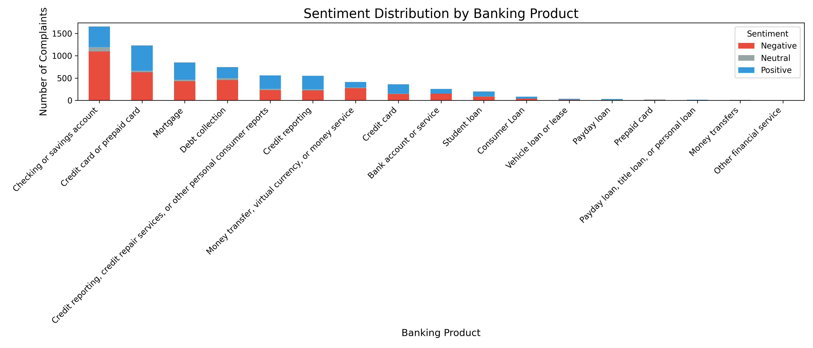

Banking Complaints – Sentiment Insights Report
Project Overview
This report analyzes customer complaints submitted to banks throughout 2023. The dataset includes over 7,000 complaints across various banking products, with metadata such as complaint description, product type, date received, and customer location.
Objective
To extract actionable insights from customer feedback using Natural Language Processing (NLP), sentiment analysis, and classification models. The goal is to help stakeholders understand pain points, regional trends, and product-specific issues.
Data Preparation
- Filled missing values in
State and ZIP to preserve geographic data.
- Cleaned complaint text: lowercased, removed punctuation/numbers, stopwords, and applied lemmatization.
- Converted text into TF-IDF features for modeling.
Modeling
Two models were trained to predict the banking product based on complaint text:
- Naive Bayes: Simpler model, accuracy ~56%
- Logistic Regression: More robust, accuracy ~70%, handles class imbalance better
Sentiment Analysis with VADER
Applied sentiment analysis using VADER (Valence Aware Dictionary and sEntiment Reasoner),
a rule-based model designed for short, informal text. It’s particularly effective for analyzing customer complaints
because it interprets:
- Slang and informal language
- Emoticons and punctuation emphasis
- Acronyms and negations (e.g., “not good”)
The analysis was performed on the complaint_description column, where each entry was classified into one of three sentiment categories
based on its compound score:
- Positive: score ≥ 0.05 — indicates the complaint contains overall positive language or praise
- Negative: score ≤ -0.05 — reflects dissatisfaction, frustration, or criticism
- Neutral: between -0.05 and 0.05 — typically factual, procedural, or emotionally flat language
Neutral complaints often describe a situation without expressing clear approval or disapproval — for example:
“I submitted a request and haven’t heard back” or “My account was closed without notice.”
These statements convey concern but lack strong emotional tone.
This classification helps quantify customer sentiment and identify which banking products or regions are associated
with more emotionally charged feedback.
Visual Insights
1. Sentiment Distribution by Product

Shows how sentiment varies across banking products.
2. Total Negative Complaints by Product
Highlights which products receive the most negative feedback.
3. Products with High Negative Sentiment
Focuses on products with over 400 negative complaints.
4. Products with More Positive Than Negative Complaints
Identifies products with stronger positive sentiment.
5. Low Volume but High Negativity
Flags niche products with concerning sentiment ratios.
6. Sentiment Breakdown by Product (Grouped Bars)

Compares sentiment categories side-by-side for each product.
7. Complaint Sentiment Distribution by State
Reveals geographic concentration of negative and positive feedback.
Business Insights
- Products like Checking accounts and Credit cards show high complaint volumes and negative sentiment.
- Some products (e.g. Student loans) have more positive than negative feedback.
- Certain states show disproportionate negativity, which may indicate regional service issues.
What I Learned
- How to clean and preprocess text data for NLP
- How to apply TF-IDF and train classification models
- How to use VADER for sentiment analysis
- How to visualize and communicate insights effectively
GitHub Summary
This project is available on
GitHub
and includes:
- Data cleaning and preprocessing scripts
- Model training and evaluation
- Sentiment analysis pipeline using VADER
- Insightful visualizations and business recommendations
Author
Carllos Watts-Nogueira focused on transforming raw data into actionable business insights.
data scientist | sentiment analysis| data visualization | stakeholder-driven reporting.